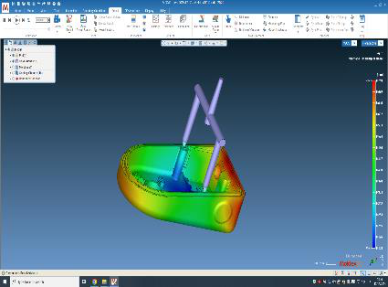

Academic team project
Injection Moulding Process Optimisation
Comparing six material and gate configurations for the exterior surface of an injection-moulded part.
- Software
- Moldex3D
- Period
- September 2024 to January 2025
Introduction
The project studied how a moulded part’s exterior surface could change with the polymer and the points where molten material enters the mould. The two polymers were acrylonitrile butadiene styrene (ABS) and polylactic acid (PLA).
Method
Model setup
I configured gates, runners and cooling channels in Moldex3D using the supplied part geometry.
Six configurations
I ran three ABS and three PLA cases, varying the number and positions of gates and selected process settings. We compared warpage, volumetric shrinkage and sink marks.
My contribution
I completed all software stages of the exercise. The team shared the analysis, interpretation and report writing.


Results
The PLA case with two edge gates produced the lowest simulated values of the six configurations for all three reported indicators: 0.718 mm warpage, 0.982% volumetric shrinkage and 0.16 mm sink-mark displacement.
The five-gate PLA case had lower warpage than the four-gate PLA case, while the four-gate case had lower volumetric shrinkage. These comparisons apply to the configurations as modelled, since gate layouts and some process settings changed together.
| Material and gates | Warpage (mm) | Volumetric shrinkage (%) | Sink-mark displacement (mm) |
|---|---|---|---|
| ABS · 3 outer gates | 1.131 | 2.654 | 0.45 |
| ABS · 2 inner gates | 1.127 | 2.622 | 0.22 |
| ABS · 4 inner gates | 1.185 | 2.762 | 0.20 |
| PLA · 4 inner gates | 0.795 | 1.829 | 0.18 |
| PLA · 5 inner gates | 0.786 | 2.320 | 0.20 |
| PLA · 2 edge gates | 0.718 | 0.982 | 0.16 |